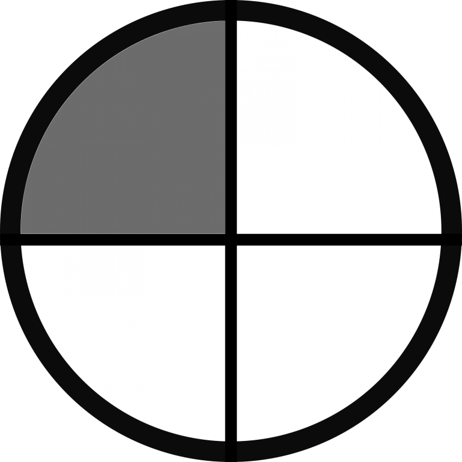
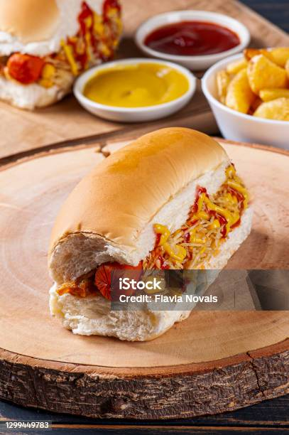

Cachorro Quente
| Dificuldade |  Porções |
Tempo de preparo |
|---|---|---|
| Fácil | 1 | 20 minutos |

Ingredientes
- 1 pão de cachorro-quente
- 1 salsicha
- 1 colher de sopa de ketchup
- 1 colher de sopa de mostarda
- 1 colher de sopa de maionese
- 1 colher de sopa de purê de batata
- 1 colher de sopa de milho verde
- 1 colher de sopa de ervilha
- 1 colher de sopa de queijo ralado
Modo de Preparo
- Abra o pão de cachorro-quente e coloque a salsicha no meio.
- Adicione as condimentações conforme sua preferência.
- Feche o pão e sirva quente.